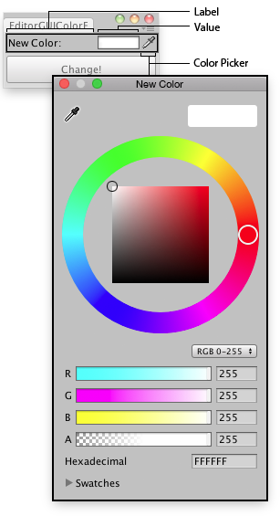

EditorGUI.ColorField
public static Color ColorField(Rect position,
GUIContent label,
Color value,
bool showEyedropper,
bool showAlpha,
bool hdr);
Obsolete public static Color ColorField(Rect position,
GUIContent label,
Color value,
bool showEyedropper,
bool showAlpha,
bool hdr,
ColorPickerHDRConfig hdrConfig);
Parameters
| position | Rectangle on the screen to use for the field. | |
| label | Optional label to display in front of the field. | |
| value | The color to edit. | |
| showEyedropper | If true, the color picker should show the eyedropper control. If false, don't show it. | |
| showAlpha | If true, allow the user to set an alpha value for the color. If false, hide the alpha component. | |
| hdr | If true, treat the color as an HDR value. If false, treat it as a standard LDR value. |
Returns
Color The color selected by the user.
Description 描述
Makes a field for selecting a Color.

Color field in an Editor Window.
using UnityEngine; using UnityEditor;
// Change The color of the selected Game Objects class EditorGUIColorField : EditorWindow { Color matColor = Color.white;
[MenuItem("Examples/Mass Color Change")]
static void Init() { var window = GetWindow<EditorGUIColorField>(); window.position = new Rect(0, 0, 170, 60); window.Show(); }
void OnGUI() { matColor = EditorGUI.ColorField(new Rect(3, 3, position.width - 6, 15), "New Color:", matColor); if (GUI.Button(new Rect(3, 25, position.width - 6, 30), "Change!")) { ChangeColors(); } }
void ChangeColors() { if (Selection.activeGameObject) { foreach (GameObject obj in Selection.gameObjects) { Renderer rend = obj.GetComponent<Renderer>();
if (rend != null) { rend.sharedMaterial.color = matColor; } } } } }